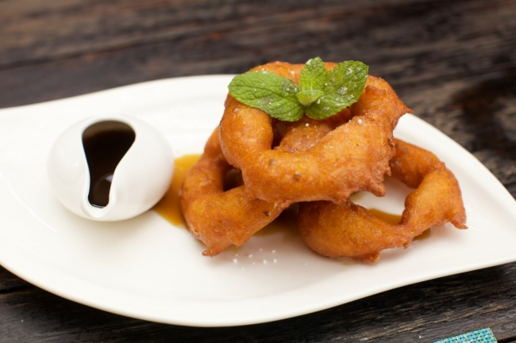

Торты


Привет! Меня зовут Анастасия и я влюблена в кондитерское искусство ;)
Страсть к выпечке зародилась в студенческие годы, когда мы с подружкой, несмотря на загруженные с утра до позднего вечера дни учебой и работой, находили время и силы по ночам пробовать и пробовать новые рецепты. Далее увлечение переросло в выпечку на заказ, снова же по ночам, после офисной работы по специальности. И вот сейчас, вместе со сменой места осуществилась и смена белой рубашки и строгих порядков на фартук и полет фантазий :)
Приглашаю заглянуть в мой кондитерский мир!
Этими пряными пончиками любят лакомиться многие в Южной Америке, но именно в Перу они приобрели статус мегапопулярного десерта. Готовят их из тыквы или сладкого картофеля, а подают с медом или сиропом из тростникового сахара и цитрусовых.
 Читать полностью
По стандартам США, в молочном шоколаде должно содержаться всего лишь около десяти процентов тёртого какао, в то время как в полусладком шоколаде, содержание тёртого какао должно быть не менее тридцати пяти процентов. Молочный шоколад, который изготавливается по немного другим правилам, должен содержать не менее двадцати процентов какао-масла.
Читать полностьюИстория гласит, что макарон, несмотря на неимоверную популярность у французов, был впервые создан примерно в 1533 году в Италии шеф-поваром Екатерины Медичи, слывшей большой сластёной. Позднее, став женой французского короля, она перевезла свою маленькую «итальянскую» слабость во Францию.
Читать полностьюТрюфели – одни из самых известных конфет в мире. Их родина – Франция, а свое название они получили по внешнему сходству с грибом элитного сорта – трюфелем. Первоначально это лакомство имело форму неровных шариков, а привычную нам куполообразную форму приобрело позднее. Эти конфеты легко приготовить дома – домашние трюфели ничуть не хуже, а может, даже лучше магазинных.
Читать полностью